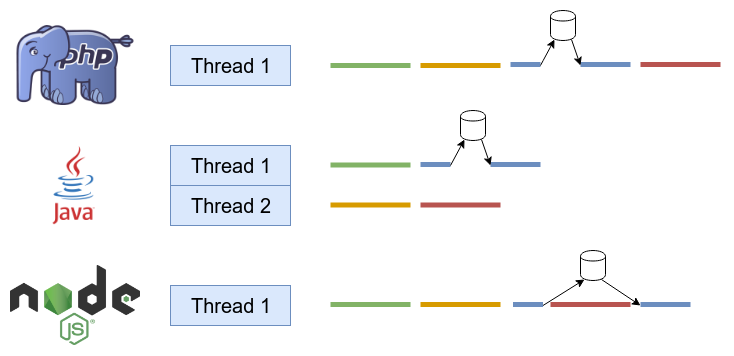

libuv est une librairie multi-plateformes écrite en C et permettant de gérer la partie asynchrone de NodeJS.
Cette librairie a été développée pour le projet NodeJS mais elle est maintenant utilisée dans d'autres projets.
Contrairement à d'autres langages tel que le Java ou le C#, NodeJS n'est pas conçu pour supporter le multithreading.
Cependant, le système d'event loop permet dans certains cas d'obtenir de meilleurs performances.
Si une tâche n'implique pas de traitement lourd comme par exemple écrire dans un fichier ou rechercher des données en base de données, Event loop va réaliser le traitement.
Cependant, s'il s'agit d'un traitement lourd, le traitement sera dans ce cas attribué au Worker pool et ce fera dans un nouveau thread.
setTimeout() ou setInterval()setImmediate()socket.on('close', ...))L'ensemble de ces étapes est un "Tick".
Un "tick" correspond à un cycle d'éxecution dans l'event loop.
Plusieurs méthodes peuvent être utilisées pour ajouter des fonctions dans l'event loop :
setTimeout() : Au début de l'event loopsetImmediate() : A la fin de l'event loopprocess.nextTick() : Avant de recommencer l'event loopDans la pluspart des cas, il est recommandé d'utiliser setImmediate().